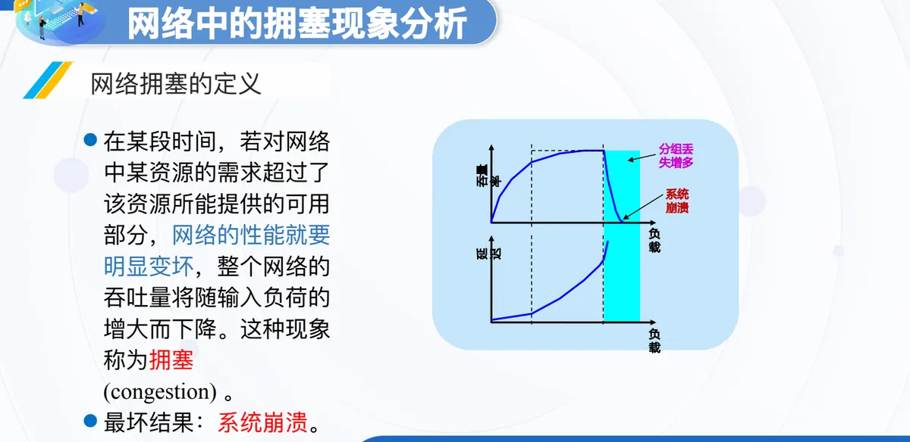
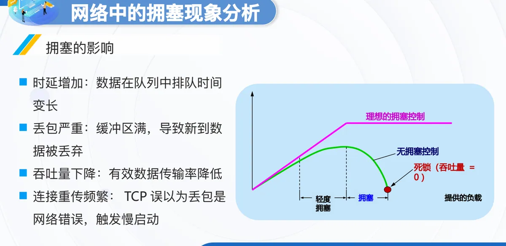
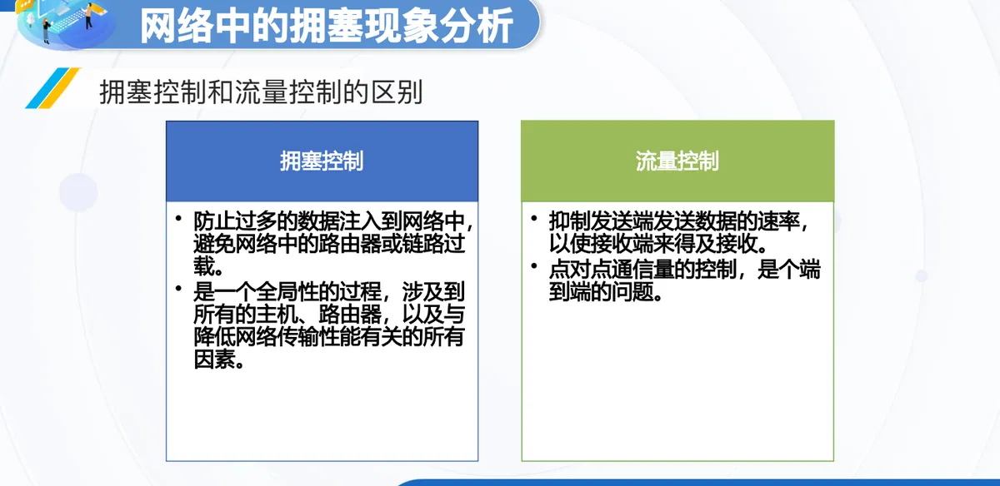

计算机通信与网络 · 第二版讲义 · 第 6 章 网络中的拥塞控制
6.1 网络中的拥塞现象分析
网络中的资源总是有限的，而用户对资源的需求却在不断变化：一段链路、一台路由器、一个节点的处理能力，都可能在某段时间被需求压垮。这种「要的比能给的更多」的状态就是拥塞，它一旦出现，网络不会只是慢一点，而是整体性能明显变坏。本节先看生活中的类似现象，再给出网络拥塞的定义与最坏结果，接着分析它的产生原因、出现条件和具体影响，最后辨析一对容易混淆的概念——拥塞控制与流量控制。
1. 从生活中的拥塞现象说起
拥塞并不只发生在网络里。演唱会开票那一刻，成千上万的用户同时刷新同一个购票页面；选课系统开放的头几分钟，全校学生挤在同一时间提交选课请求；电商大促的整点秒杀，瞬时访问量可以是平日的几十上百倍。这些场景有一个共同点：需求在极短的时间内集中涌向同一份资源，于是响应变慢、请求排队、页面报错，甚至整个系统失去服务能力。网络中的拥塞本质上是同一件事，只不过争抢资源的换成了分组。
2. 网络拥塞的定义
把上面的直觉写成准确的说法：在某段时间，若对网络中某资源的需求超过了该资源所能提供的可用部分，网络的性能就要明显变坏，整个网络的吞吐量将随输入负荷的增大而下降，这种现象称为拥塞（congestion）。定义里有两件事同时发生——性能明显变坏，以及吞吐量随负荷增大反而下降。还要记住它最坏的结果是系统崩溃：网络不仅送不出更多的数据，连原有的输送能力也保不住。

这张图说明，拥塞不能靠「再多发一点」来解决。负载越大，注入网络的数据越多，而网络真正送出去的数据反而越少；等到分组丢失大量增多，网络就滑向崩溃。
3. 拥塞的产生原因与条件
拥塞由许多因素引起，课件列举了几类典型情况：
- 节点缓存容量太小：缓冲区装不下瞬时到达的分组，多出来的只能被丢弃；
- 链路容量不足：链路的传输能力低于实际需要通过的流量；
- 处理机处理速率太慢：节点来不及完成转发所必需的处理工作；
- 拥塞本身会进一步加剧拥塞：分组被丢弃后发送方要重传，重传又给已经拥挤的网络添上新的流量。
前三条说的都是资源不够，最后一条则点出了拥塞的性质：它具有正反馈的效果，一旦进入拥塞状态，网络自己就会不断制造新的负担，把情况越推越糟。由此可以概括出出现网络拥塞的条件：∑ 对资源需求 > 可用资源。也就是说，当各项需求之和超过了资源能够提供的可用部分，网络就有可能拥塞。
4. 拥塞的影响
拥塞一旦出现，影响会沿着通信路径扩散开来，具体表现在四个方面：
- 时延增加：数据在队列中排队的时间变长；
- 丢包严重：缓冲区满，新到达的数据被丢弃；
- 吞吐量下降：有效数据的传输率降低；
- 连接重传频繁：TCP（Transmission Control Protocol）误以为丢包是网络错误，触发慢启动。
最后一条尤其值得留意。TCP 靠确认与超时来判断数据是否送达，它分不清分组丢失是被缓冲区丢弃，还是链路本身出了差错，于是把拥塞造成的丢包当成网络故障来处理，缩小发送窗口并进入慢启动。结果是发送速率进一步降低，重传又给网络叠加了新的负载，应用层感受到的吞吐量因此明显下降。（第一版讲义 5.5 TCP的拥塞控制 对慢启动与拥塞窗口有更详细的讨论。）

这张图把几种情况放在一起对比，结论很清楚：拥塞控制做得越到位，网络在高负载下越能维持可用的吞吐量；完全没有拥塞控制，网络就会从轻度拥塞走向拥塞，最终进入吞吐量为 0 的死锁状态。这正是要在拥塞恶化之前就加以控制的原因。
5. 拥塞控制与流量控制的区别
这两个词经常被混用，课件专门用一张图作了对比（图 4）。拥塞控制要防止过多的数据注入到网络中，避免网络中的路由器或链路过载；它是一个全局性的过程，涉及到所有的主机、路由器，以及与降低网络传输性能有关的所有因素。流量控制则是点对点通信量的控制，是个端到端的问题，它要抑制发送端发送数据的速率，以使接收端来得及接收。

两者的着眼点不同。流量控制关心的是「接收方能不能收得下」，只盯住通信的两端，发送方按接收方的接收能力调整速率就够了；拥塞控制关心的是「网络能不能送得动」，看的是两台主机之间整个网络的状态，因此需要所有主机与路由器共同参与。换言之，流量控制解决端系统之间的能力匹配，拥塞控制解决网络资源的全局分配；只做流量控制而不做拥塞控制，网络仍然可能被注入的数据压垮。下一节 6.2 节将介绍拥塞控制的基本方法。
本节小结
- 拥塞的定义：在某段时间，对网络中某资源的需求超过了该资源所能提供的可用部分，网络性能明显变坏，吞吐量随输入负荷的增大而下降；最坏结果是系统崩溃；
- 拥塞由许多因素引起，典型的有节点缓存容量太小、链路容量不足、处理机处理速率太慢；而拥塞本身会进一步加剧拥塞，使它带有正反馈的性质；出现网络拥塞的条件是 ∑ 对资源需求 > 可用资源；
- 拥塞的影响有四条线索：时延增加、丢包严重、吞吐量下降、连接重传频繁；其中 TCP 把拥塞造成的丢包误判为网络错误而触发慢启动，会让性能进一步恶化；
- 负载—吞吐量曲线说明，无拥塞控制时吞吐量在负载过大后会急剧下跌，网络由轻度拥塞走向拥塞，直至死锁（吞吐量 = 0），所以控制要在恶化之前介入；
- 拥塞控制与流量控制不是一回事：前者是全局性过程，防止过多数据注入网络、避免路由器或链路过载；后者是点对点的通信量控制，属端到端问题，目的是让接收端来得及接收。